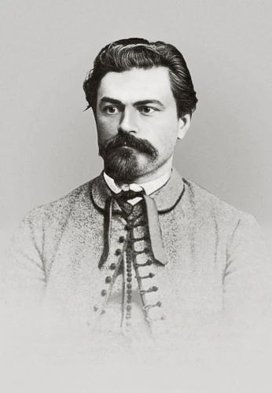

Vítězslav Hálek
5. 4. 1835 – 8. 10. 1874

- své první texty publikoval už na gymnáziu
- byl redaktorem Národních listů (rubrika literární a divadelní)
- psal fejetony a redigoval několik časopisů (Květy)
- za života byl více oceňován než jeho přítel Neruda
- hodně cestoval – Polsko, Itálie, Balkán – cestovní fejetony
- neúspěšný dramatik x zásluhy o postavení Prozatimního divadla
- organizátor kulturního života
- Večerní písně, Muzikantská Liduška
Narodil se 5. dubna 1835 v Dolínku u Mělníka. Studoval na akademickém gymnáziu v Praze a krátce i filozofii na univerzitě, studia však nedokončil. Věnoval se novinářské a literární činnosti — byl redaktorem Národních listů a časopisu Lumír.
Jeho poezie je plná optimismu, víry v člověka a lásky k životu (Večerní písně, V přírodě). V próze se zaměřoval na venkovské prostředí a lidské vztahy (Poldík rumař, Na statku a v chaloupce). Napsal také několik divadelních her.
Hálek zemřel předčasně 8. dubna 1874 v Praze na zápal plic. Byl pohřben na Vyšehradě a dodnes je považován za jednu z klíčových postav české literatury 19. století.